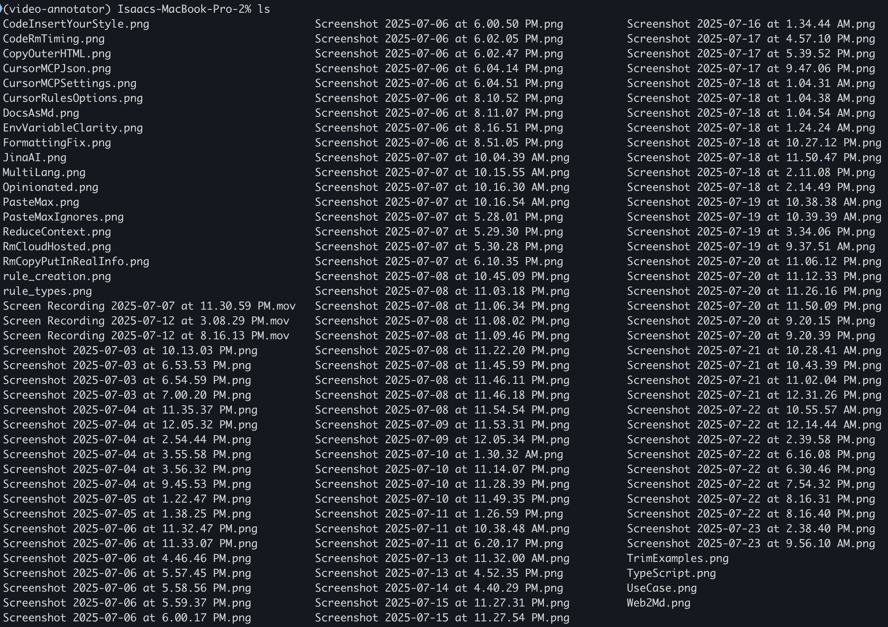
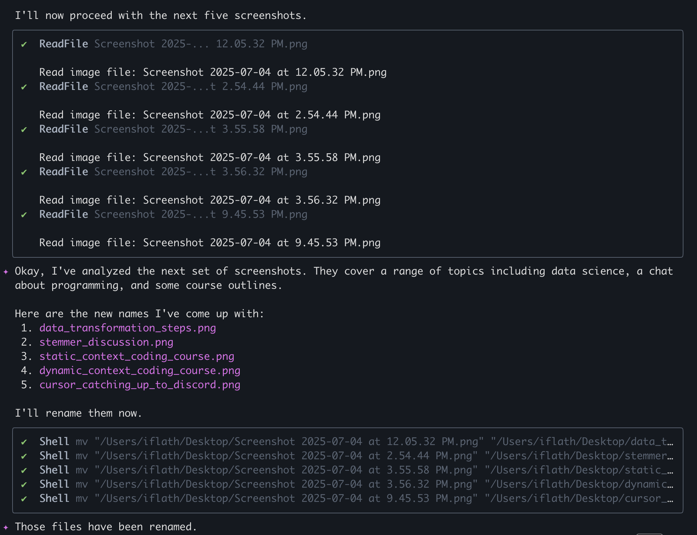

Gemini CLI Tool Review
For the next tool review in my series, I decided to use the Gemini CLI.
The Task
My desktop is cluttered with ~ a billion unnamed screenshots and screen recordings. I’ve wanted to clean them for a while, but renaming them is a huge pain.
Because the Gemini models are to be the best at multimodal tasks like image and video, Gemini CLI felt like it should be a good choice. I decided to tackle this in 2 phases:
- Try using the Gemini CLI out of the box to rename this files with 0 effort by looking at image and video content.
- Create a desktop app that has file navigations and single vs bulk file renaming to make a genral solution.
That way I should get a good feel for the tool’s capabilities and learn a bit about building a desktop app. This review is part of my research for my “AI Assisted Coding” course, where I teach how to get the most out of AI tools.

Get 30% off my AI Assisted Coding course with code ISAAC
The Messy Desktop
As you can see, I have a lot of unnamed screenshots and I have no idea what they are. I’ve tried to rewrite them but it’s a pain so I didn’t get far [00:01:09]

Using the Gemini CLI for Renaming
I fired up the Gemini CLI and gave it the task of renaming the files without any code. [00:01:24] I was pleased to see that it did a great job of analyzing the content of the images and videos and suggesting meaningful names.

The CLI renamed a batch of files, and the new names were descriptive and accurate. [00:01:42]

Here’s another example of the CLI renaming a screenshot with a descriptive name. [00:01:39]

The tool also handled video files (.mov) just as effectively as images. [00:02:00]

It didn’t keep track of the work progress well however. I found that the CLI would sometimes stop a lot before completing the entire task, and I had to remind it to do a ls | grep Screenshot of the directory to see if there’s more to do to get it to continue. [00:02:15]

Building a Desktop App with the Gemini CLI
Once I confirmed that the core functionality was possible, I moved on to building a desktop application to make this renaming process easier in the future. I hadn’t built a desktop app before, so this was fun.
A feature I particularly liked was the ability to modify the proposed changes in an external editor before applying them. [00:03:09] This gave me more a bit more control.

I chose to open in cursor, and it gave me an editable diff view I could modify before the changes are applied.

The Gemini CLI also generated a plan for the application before it started coding, which is nice. Claude Code and many other tools do this too. But it’s still nice. [00:03:33]

The end result was a functional-ish, but very buggy, desktop application. I was able to select a directory, have the AI suggest new names for the files, and then apply those names. [00:03:54]

The application included logging, which was helpful. [00:04:42]

Code Quality and Bugs
While the app “worked,” it had several major bugs.
- I couldn’t select individual files, and the app would often hang after processing one directory. [00:04:06]
- After doing it’s first bulk rename operation it would somehow get into a state where no additional renamings would work so the whole app would need to be restarted. There were no errors logged.
When I dove into the code more carefully, I found the common AI code culprits such as overuse of generic try...except blocks that would catch exceptions and simply print them to the console. [00:04:57] This hides bugs and make the application less robust and harder to fix but appear to work at a glance.

Final Thoughts
Overall, I have found the Gemini CLI to be pretty useful, especially for multimodal tasks like analyzing images and videos. [00:06:36] Its ability to generate descriptive names for my screenshots and videos with 0 effort was really nice. The code it generated for the desktop application was a good starting point and a valuable learning tool, I don’t really think it’s better than claude code.
The code was understandable enough and I followed along with the code generation process enough that I understood what it was doing a learned a bit about making a desktop app. However, if I were to build a desktop app for this for real I would start over rather than continue to work with this code.
While not included in this use, for tasks like content creation, writing, and quick, one-off multimodal tasks, Gemini is fantastic. For software development, I think there are better options.